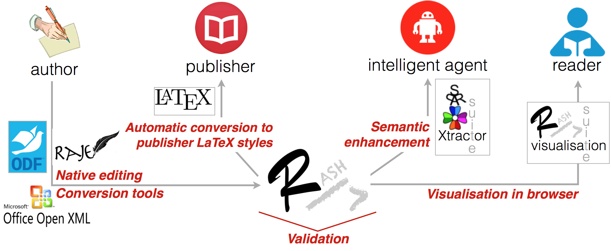
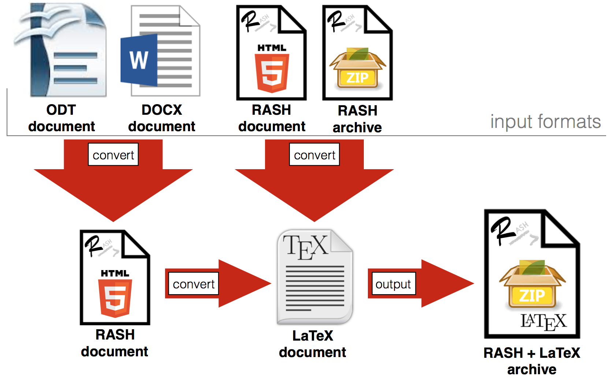
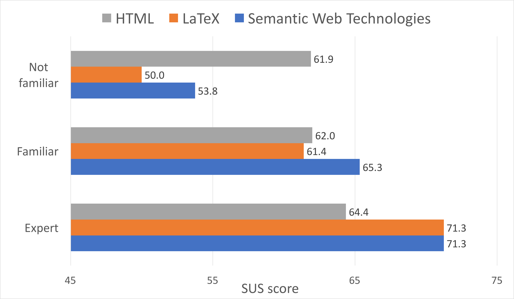
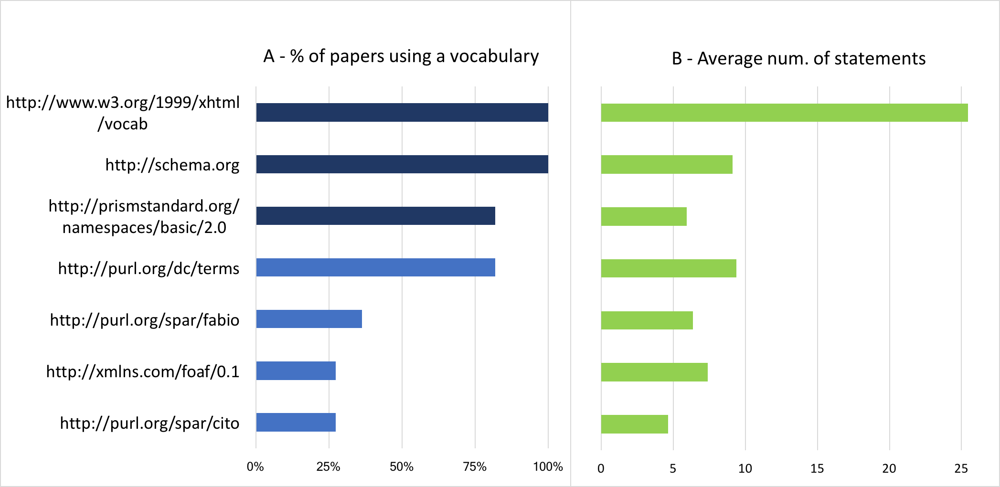
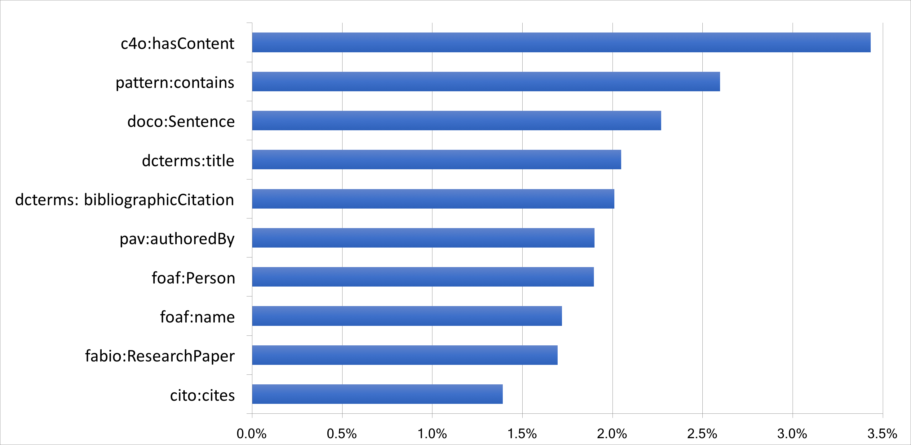

Purpose: this paper introduces the Research Articles in Simplified HTML (or RASH), which is a Web-first format for writing HTML-based scholarly papers; it is accompanied by the RASH Framework, a set of tools for interacting with RASH-based articles. The paper also presents an evaluation that involved authors and reviewers of RASH articles submitted to the SAVE-SD 2015 and SAVE-SD 2016 workshops.
Design: RASH has been developed aiming to: be easy to learn and use; share scholarly documents (and embedded semantic annotations) through the Web; support its adoption within the existing publishing workflow
Findings: the evaluation study confirmed that RASH is ready to be be adopted in workshops, conferences, and journals and can be quickly learnt by researchers who are familiar with HTML.
Research limitations: the evaluation study also highlighted some issues in the adoption of RASH, and in general of HTML formats, especially by less technically savvy users. Moreover, additional tools are needed, e.g. for enabling additional conversions from/to existing formats such as OpenXML.
Practical implications: RASH (and its Framework) is another step towards enabling the definition of formal representations of the meaning of the content of an article, facilitating its automatic discovery, enabling its linking to semantically related articles, providing access to data within the article in actionable form, and allowing integration of data between papers.
Social implications: RASH addresses the intrinsic needs related to the various users of a scholarly article: researchers (focussing on its content), readers (experiencing new ways for browsing it), citizen scientists (reusing available data formally defined within it through semantic annotations), publishers (using the advantages of new technologies as envisioned by the Semantic Publishing movement).
Value: RASH helps authors to focus on the organisation of their texts, supports them in the task of semantically enriching the content of articles, and leaves all the issues about validation, visualisation, conversion, and semantic data extraction to the various tools developed within its Framework.
Notes: revision submitted to PeerJ Computer Science.
This version: https://w3id.org/people/essepuntato/papers/rash-peerj2016/2017-07-06.html
Last version: https://w3id.org/people/essepuntato/papers/rash-peerj2016.html
In the last months of 2014, several posts within technical mailing lists of the Web and Semantic Web community have discussed an evergreen topic in scholarly communication, i.e., how could authors of research papers could submit their works in HTML rather than, say, PDF, MS Word or LaTeX. Besides the obvious justification of simplification and unification of data formats for drafting, submission and publication, an additional underlying rationale is that the adoption of HTML would ease the embedding of semantic annotations, thus improving research communications thanks to already existing W3C standards such as RDFa , Turtle and JSON-LD . This opens complex and exciting scenarios that the Semantic Publishing community has promised us in terms of increased discoverability, interactivity, openness and usability of the scientific works .
Nonetheless, HTML is still primarily used as an output format only: the authors write their papers in LaTeX or MS Word and submit sources to the typesetters, who are responsible for producing the final version, that eventually will be published and read on the Web. Appropriate tools in the publishing toolchain are used to convert papers among multiple formats.
The interest in Web-first research papers - that are natively designed, stored and transferred in HTML - is increasing. Just to cite a few research efforts: Scholarly HTML defines a set of descriptive rules for adopting a defined subset of HTML to describe the metadata and content of scholarly articles; Dokieli is a Web application that allows authors to create HTML-based scholarly articles directly on the browser, adding annotations and many other sophisticated features.
This paper introduces a novel approach towards the same goal: providing authors with a subset of HTML for Web-first papers. The format is called RASH, Research Articles in Simplified HTML, and consists of 32 HTML elements only. This format is also accompanied by the RASH Framework, a set of specifications and tools for RASH documents .
There are two key differences between RASH and other similar proposals. First of all, RASH adopts a simplified pattern-based data model. The number of markup elements to be used by authors was reduced down to the bare minimum, and the elements themselves were chosen in order to minimize the cognitive effort of authors when writing documents. Secondly, RASH does not come with a full authoring environment but is expected to be produced from MS Word, ODT and LaTeX sources. The basic idea is to allow authors to keep using the word processors on which they routinely write their papers and to provide them with multi-format converters. These converters are included in the RASH Framework, whose architecture is modular and extensible for handling new formats in the future.
RASH is in fact intended to help authors in focussing on the
organisation of their texts and supports them in the task
of semantically enriching the content of articles, delegating all the issues about
validation/presentation/conversion of RASH documents to the various tools developed
within its Framework. This is a well-known principle in scientific publishing, even if not yet fully applied:
clear separation of concerns. The authors should focus on organising the
content and structure only, and the format should not require authors to worry about
how the content will be presented on screen and in print. The publishers will then take care
of creating the final formatting to best render the content in the style of their
publications, or authors could use self-publishing platforms as promoted by Linked Research.
Such a separation of concerns can be pushed much forward.
Pettifer et al.
explained well the difference between an article as an instance of scholarly thought
and a representation for consumption by human or machine
,
and showed how multiple representations can be combined, integrated with external data, enhanced and interacted with in order to provide scholars with sophisticated tools
directly within their articles.
Another critical requirement for any HTML-based language used for scientific writing is good rendering and acceptance by the publishers. Any new HTML-based format should be beneficial for publishers as well. Of course, publishers, conferences, and workshop organisers, would like to manage new formats in the same way as for the formats they already support, such as LaTeX. To this end, these formats should support tools for their conversion and for rendering the content in specific layouts, such as ACM ICPS and Springer LNCS. RASH adopts a pragmatic approach to this issue: while we are interested in a full-fledged native RASH authoring environment, we implemented a set of converters, in the RASH Framework, that are easily integrable (and were integrated) with existing publishing platforms.
The goal of this paper is, in fact, to describe the outcomes of some experimentations on the use of RASH, so as to understand:
if it can be adopted as HTML-based submission format in academic venues (workshops, conferences, journals);
if it is easy to learn and use;
if it can be used to add semantic annotations and what are the most widely adopted vocabularies in RASH papers;
The rest of the paper is structured as follows. In we introduce some of the most relevant related works in the area, providing a functional comparison of the various works. In we introduce the rationale for the creation of a new Web-first format for scholarly publications, discussing the importance of minimality. In and we introduce the theoretical background of RASH, and then provide an introduction to the language and the main tools included in its Framework. In we present, as a case study, an analysis of the adoption of RASH at the SAVE-SD 2015 and SAVE-SD 2016 workshops. Finally, in we conclude the paper by sketching out some future developments.
Web-firstformat for research articles?
The term "Web-first" format indicates the possibility of using HTML as a primary format to write, store and transfer research articles, and not only to make these articles available on the Web. Some questions naturally arise in this context: shall we use the full HTML? If we impose a limited subset, which elements should we consider? Shall we demand specific rules for using the language?
Some works, e.g. , suggest not to force any particular HTML structure
for research papers. This choice would allow authors to use whatever HTML structure
they want for writing papers and would reduce (even, eliminate) the fear for the
template bottleneck, i.e., the fact that users may not adopt a particular language if they are compelled to follow specific rules. On the other hand, leaving to the authors
the freedom of using, potentially, the whole
HTML specification may affect, in some way, the whole writing and publishing process
of articles. The author could adopt any kinds of HTML
linearisations, e.g.: using elements
div instead of elements section, using elements
table for their presentational behaviour (i.e. how they are rendered by browsers or other software readers)
and not for presenting tabular data, and the like. This freedom could
result in two main kinds of issues:
visualisation bottleneck – it may affect the correct use of existing, well-developed and pretty standard CSSs (e.g., Capadisli's CSSs developed for Dokieli) for both screen and print media, in having to write new codes for handling paper visualisation correctly;
less focus on the research content – the fact that a certain paper is not visualised in a browser very well (or, worse, in a way that is not the one the author expects) could bring the author to work on the presentation of the text, rather than on focussing on the actual research content of the text.
Another point against the use of any HTML syntax for writing papers concerns the
possibility of enabling an easy way for sharing the paper with others (e.g.,
co-authors) who, potentially, may not use HTML in the same way. If all the
co-authors of a paper are able to use the full HTML, they may not understand other
users' specific use of some HTML tags — why did they use the elements
; section instead of div?what is this
freaky use of elements
. Hence, the advantages of using a
common HTML format is quite evident: only one syntax and only one possible
semantics.table?
There is a further issue worth mentioning. Having a shared, unambiguous and simple format would facilitate conversions from/into other complex ones (e.g., ODT , OOXML , DocBook , JATS ), thus enabling authors to use their own text editors or word-processors to modify the articles. The conversion is instead much more complex, error-prone and imprecise on the full HTML.
To complicate an already complex scenario there is the necessary involvement of publishers. Allowing the authors to use their own HTML format could be counterproductive from a publisher's perspective, in particular when we speak about the possibility of adopting such HTML formats for regular conference/journal camera-ready submissions. From a recent discussion on the Force11 mailing list, it emerges that publishers are willing to adopt HTML for submissions if and only if it is a clear community need. It means that they will include HTML formats in the publishing workflow only once a number of conference organisers decides to include HTML among the accepted formats for paper submissions . However, using one clear Web-first format, rather than a plethora of possible variations allowed by the full HTML schema, would certainly lighten the burden of publishers for including HTML within their publishing workflow. This inclusion could be additionally favoured by the availability of services (e.g., editors, converters, enhancers, visualisers) for facilitating the use of such a Web-first format within the existing publishing environments.
Last but not least, using a controlled subset of HTML is more appropriate for
Semantic Publishing applications . The development of scripts and applications to
extract, for instance, RDF statements directly from the markup structure of the text
is a sort of nightmare if different authors use HTML in different manners. For
instance, what happens when trying to extract the rhetorical organisation of a
scientific paper according to the Document
Component Ontology (DoCO)
from two HTML documents that use HTML tags in different ways?
Is an HTML element table an actual table (containing tabular data)?
Which are the tags identifying sections? These analyses are all easier within a controlled and unambiguous subset of HTML.
The subset of HTML we propose in RASH is strictly compliant to a patterns theory we have developed over the past few years. Patterns are widely accepted solutions to handle recurring problems. Firstly introduced for architecture and engineering problems , they have been successfully deployed in computer science and in particular in software engineering . In this section, we briefly introduce our patterns for document engineering and then we go into the details of RASH.
While we have plenty of tools and languages for creating new markup languages (e.g. RelaxNG and XMLSchema ), these usually do not provide any particular guideline for fostering the development of robust and well-shaped document languages. In order to fill that gap, in the last decade we have experimented with the use of a theory of structural patterns for markup documents , that has since been applied in several national and international standards, among which OASIS LegalDocumentML , a legal document standard for the specification of parliamentary, legislative and judicial documents, and for their interchange between institutions in different countries.
The basic idea behind this theory is that each element of a markup language should comply with one and only one structural pattern, depending on the fact that the element:
can or cannot contain text (+t in the first case, -t otherwise);
can or cannot contain other elements (+s in the first case, -s otherwise);
is contained by another element that can or cannot contain text (+T in the first case, -T otherwise).
By combining all these possible values – i.e. ±t, ±s, and ±T – we basically obtain eight core structural patterns, namely (accompanied by a plausible example within the HTML elements):
inline [+t+s+T], e.g. the element em;
block [+t+s-T], e.g. the element p;
popup [-t+s+T], e.g. the element aside;
container [-t+s-T], e.g. the element
section;
atom [+t-s+T], e.g. the element abbr;
field [+t-s-T], e.g. the element title;
milestone [-t-s+T], e.g. the element img;
meta [-t-s-T], e.g. the element link.
Instead of defining a large number of complex and diversified structures, the idea is that a small number of structural patterns are sufficient to express what most users need for defining the organisation of their documents. Therefore, the two main aspects related to such patterns are:
orthogonality – each pattern has a specific goal and fits a specific context. It makes it possible to associate a single pattern to each of the most common situations in document design. Conversely, for every situation encountered in the creation of a new markup language, the corresponding pattern is immediately selectable and applicable;
assemblability – each pattern can be used only in some contexts within other patterns. This strictness provides expressiveness and non-ambiguity in the patterns. By limiting the possible choices, patterns prevent the creation of uncontrolled and misleading content structures.
Such patterns allow authors to create unambiguous, manageable and well-structured markup languages and, consequently, documents, fostering increased reusability (e.g., inclusion, conversion, etc.) among different languages. Also, thanks to the regularity they provide, it is possible to perform easily complex operations on pattern-based documents even when knowing very little about their vocabulary (automatic visualisation of document, inferences on the document structure, etc.). In this way, designers can implement more reliable and efficient tools, can make a hypothesis regarding the meanings of the document fragments, can identify singularities and can study the global properties of a set of documents, as described in .
We applied these guidelines for the definition of RASH. We restricted HTML, which does not use the aforementioned patterns in a systematic way, allowing the creation of arbitrary and, sometimes, quite ambiguous structures by selecting a good subset of elements expressive enough to capture the typical components of a scholarly article while being also well-designed, easy to reuse and robust.
The Research Articles in Simplified HTML (RASH) format is a markup language that restricts the use of HTML elements to only 32 elements for writing academic research articles. It allows authors to use embedded RDF annotations. In addition, RASH strictly follows the Digital Publishing WAI-ARIA Module 1.0 for expressing structural semantics on various markup elements used.
All RASH documents begin as a simple HTML5 document , by
specifying the generic HTML DOCTYPE followed by the document element
html with the usual namespace (
http://www.w3.org/1999/xhtml
) and with additional (and mandatory)
prefix declarations through the attribute prefix . The element html contains the element head for
defining metadata of the document according to the DCTERMS and PRISM standards and the element
body for including the whole content of the document. The element head of a RASH document must include
some information about the paper, i.e., the paper title (element
title), at least one author, while other related information
(i.e., affiliations, keywords and categories included using the elements
meta and link) are optional. The element
body mainly contains textual elements (e.g., paragraphs,
emphases, links, and quotations) for describing the content of the paper, and
other structural elements (e.g., abstract, sections, references, and footnotes)
used to organise the paper in appropriate blocks and to present specific
complex structures (e.g., figures, formulas, and tables).
In the following subsection, we provide a quick discussion about usage patterns in RASH, and introduce the tools used for developing its grammar.
The development of RASH started from the whole HTML5 grammar, and proceeded by removing and restricting the particular use of HTML elements, to make them expressive enough for representing the structures of scholarly papers and to have the language totally compliant with the theory on structural patterns for XML documents introduced in
The systematic use of these structural patterns is an added value in all stages of the documents' lifecycle: they can be guidelines for creating well-engineered documents and vocabularies, rules to extract structural components from legacy documents, indicators to study to what extent documents share design principles and community guidelines. All these characteristics have allowed us to simplify, at least to some extent, the handling of all the requirements introduced in and in RASH. shows what is the current pattern assignment for each element in RASH.
| Pattern | RASH element |
|---|---|
|
inline |
|
|
block |
|
|
popup |
none |
|
container |
|
|
atom |
none |
|
field |
|
|
milestone |
|
|
meta |
|
Notice that we do not use two patterns presented in , namely atom and popup. The elements compliant with the former pattern are contained in discursive blocks (e.g. paragraphs) and contain only textual content with no additional elements. This is very infrequent in scholarly writings since any element used for emphases, links, and other in-sentence elements can always contain additional elements (e.g. an emphasis can contain a link).
A different discourse can be done for the pattern popup, which is
meant to represent complex substructures
that interrupt but do not break the main flow of the text, such as footnotes
.
An element compliant to the popup pattern, while still not allowing directly text content inside
itself, is found in elements with a mixed context
[+t+s]. In particular, in developing RASH, we
discussed which of the following two possible approaches for defining
footnotes was more adequate to our needs.
The first option was a container-based behaviour, also suggested by JATS by means of the element fn-group and not included in HTML specifications, that
allows the authors to specify footnotes (through the element ft) by
using a tag that is totally separated from the main text from which it is
referenced (usually through XML attributes), as shown in the following
excerpt:
<-- A paragraph referring to a footnote -->
<p>
In this paragraph there is an explicit reference to the
second footnote<xref rid="n2"></xref>.
</p>
<-- The group containing all the footnotes -->
<fn-group>
<fn id="n1">
<p>This is a paragraph within a footnote.</p>
</fn>
<fn id="n2">
<p>This is a paragraph in another footnote.</p>
<p>
All the footnotes are contained in a group, so as
to collect them together.
</p>
</fn>
...
</fn-group>
The alternative was a popup-based behaviour, used by
default in LaTeX (through the marker \footnote{}) and even
possible in JATS (which is a very permissive language by design), where a
paragraph can be abruptly interrupted by one or more paragraphs specified in
a footnote, as shown in the following excerpt:
<-- A paragraph containing a footnote -->
<p>
In this paragraph the footnote <fn id="n3"><p>That is
what we call popup-based behaviour!.</p></fn> has been
defined directly within it.
</p>
We considered the latter approach a bit confusing, since it actually
decreases the readability of the HTML source where footnotes are needed. We thus
decided to adopt a solution similar to the JATS fn-group
element, extending the HTML5 section element with @role set to doc-endnotes and doc-endnote:
<-- A paragraph referring to a footnote -->
<p>
In this paragraph there is an explicit reference to the
second footnote<a href="#fn2"></a>.
</p>
<-- The group containing all the footnotes -->
<section role="doc-endnotes">
<section role="doc-endnote" id="fn1">
<p>This is the text of a footnote.</p>
</section>
<section role="doc-endnote" id="fn2">
<p>This is the text of another footnote.</p>
</section>
...
</section>
The formal grammar of RASH (current version: 0.6.1) has been developed by means of RelaxNG , which is a simple, easy to learn, and powerful schema language for XML. The grammar has been logically organised in four distinct logical blocks of syntactic rules, defining respectively elements, attributes, content models for the elements and their related attribute lists, as summarised in the following excerpt:
...
<define name="p">
<element name="p">
<ref name="attributes_html_element_no_role" />
<ref name="cm_inline" />
</element>
</define>
...
<define name="aClass">
<attribute name="class">
<data type="NMTOKENS" />
</attribute>
</define>
...
<define name="cm_inline">
<zeroOrMore>
<choice>
<text />
<ref name="a" />
<ref name="aRef" />
<ref name="img" />
<ref name="svg" />
<ref name="math" />
<ref name="img_math" />
<ref name="span_latex" />
<ref name="span" />
<ref name="code" />
<ref name="sub" />
<ref name="sup" />
<ref name="em" />
<ref name="strong" />
<ref name="q" />
</choice>
</zeroOrMore>
</define>
...
<define name="attributes_html_element_no_role">
<ref name="attributes_html_generic" />
<optional>
<ref name="aClass" />
</optional>
<ref name="attributes_rdfa" />
</define>
...
Starting from the latest versions of the language, there has been a clear shift towards an extended use of HTML5 semantic elements, despite the fact they are
not backwards compatible with their more generic alternatives in HTML4 .
In particular, the elements section, figure, and
figcaption have been adopted so as to clearly refer to
paper sections and boxes with tables, figures, listings and formulas,
accompanied by a particular caption.
While this choice has fostered the readability of the source, the use of
these HTML5 elements was not enough to provide proper semantics and
accessibility to the RASH source. Thus, in order to improve the user
experience in terms of accessibility of such HTML-based papers, RASH reuses
some items from the W3C Accessible Rich Internet Applications 1.1 , and also exploits several roles introduced in the
Digital Publishing WAI-ARIA Module 1.0 , which allows the digital publishers to apply the structural semantics they need to drive the authoring process while getting free accessibility
. The use of such semantics is implemented by means of the
attribute @role , that can be used on
certain RASH elements, e.g. sections, and it is very useful for specifying a
clear structural semantics where it is not formally defined. For instance,
all the references are organised in a list within a special section defined
by using the element section with the attribute
@role set to doc-bibliography
. This special section
contains one list with a bibliographic reference for each list item (i.e.,
the element li accompanied by the attribute @id
for referencing to it within the text and the attribute @role
set to doc-biblioentry
), as shown in the following excerpt:
<section role="doc-bibliography">
<h1>References</h1>
<ol>
<li id="Per2014" role="doc-biblioentry">
<p>Write here the reference entry.</p>
</li>
...
</ol>
</section>
Formulas require special consideration, since there are different ways to implement them. The standard specification for representing mathematics on the Web is MathML . Even if MathML is the best accessible way for writing mathematical formulas, the organisation of the elements for defining even a quite simple formula is quite verbose and this is a reasonable obstacle to its direct adoption, as shown in the following excerpt for describing the formula :
<math xmlns="http://www.w3.org/1998/Math/MathML">
<mi>π</mi>
<mo><!-- ⁢ --></mo>
<msup>
<mi>r</mi>
<mn>2</mn>
</msup>
</math>
To help the creator of RASH documents in dealing with formulas, RASH
adds two other ways for writing formulas in addition to MathML. The first
one is to use an image (element img), which is a very simple
way to include maths in a paper. On the other hand, it is not accessible at
all since the various elements of the formula are not marked-up properly so
as to distinguish them. Another option is to use LaTeX, which is one
of the most common ways to write formulas in many scientific papers. Both
options are specifiable in RASH by using either the element
img or the element span respectively,
accompanied by the attribute @role set to math
, as shown
in the following excerpt:
<-- Specifying a formula through the element 'img' -->
<img role="math" src="formula.png" alt="r^2" />
<-- Specifying a formula in LaTeX through the element 'span' -->
<span role="math">\pi r^2</span>
The rendering of any LaTeX formula and the multi-browser support for MathML
is implemented by using MathJax,
which is a Javascript display engine for mathematics that works in most modern
browsers. Of course, it is necessary to explicitly import MathJax in the element
head if any rendering of formulas is actually needed, as
shown in the following:
<!-- MathJax for multi-browser support of LaTeX formulas and MathML -->
<script src="https://cdn.mathjax.org/mathjax/latest/MathJax.js?config=TeX-AMS-MML_HTMLorMML"> </script>
RASH has been developed in order to allow anyone to add RDFa annotations to any element of the document. For instance, this paragraph contains the following RDF statement (in Turtle ):
@prefix cito: <http://purl.org/spar/cito/> .
<> cito:credits <http://www.w3.org/TR/rdfa-syntax/> .That was implemented by using specific RDFa attributes
(@property and @resource, in this case) within
the paragraph content, while the prefixes were defined in the element
html, as shown in the following excerpt:
<html prefix="cito: http://purl.org/spar/cito/">
...
<p>
RASH has been developed in order to allow anyone to add
<span
property="cito:credits"
resource="http://www.w3.org/TR/rdfa-syntax/">RDFa</span>
annotations to any element of the document.
</p>
...
</html>
In addition to RDFa, RASH makes available another way to inject RDF
statements to the document, by means of an element
script (within the element head):
with the attribute type set to text/turtle
for
adding plain Turtle content ;
with the attribute type set to
application/ld+json
for adding plain JSON-LD content ;
with the attribute type set to
application/rdf+xml
for adding plain RDF/XML content .
An example of the use of the script for Turtle and JSON-LD statements is
shown in the following excerpt:
<script type="text/turtle">
@prefix pro: <http://purl.org/spar/pro/> .
@prefix foaf: <http://xmlns.com/foaf/0.1/> .
@prefix sd: <https://w3id.org/scholarlydata/person/> .
sd:silvio-peroni a foaf:Person ;
foaf:givenName "Silvio" ;
foaf:familyName "Peroni" ;
foaf:homepage <http://www.essepuntato.it> ;
pro:holdsRoleInTime [
a pro:RoleInTime ;
pro:withRole pro:author ;
pro:relatesToDocument <>
] .
</script>
<script type="application/ld+json">
{
"@context":
{
"nick": "http://xmlns.com/foaf/0.1/nick",
"sd": "https://w3id.org/scholarlydata/person/"
},
"@id": "sd:silvio-peroni",
"nick": ["S.", "essepuntato"]
}
</script>
It is worth noticing that RASH does not require any particular vocabulary for introducing RDF statements, except three properties from schema.org for defining author's metadata (see Section 2 of the RASH documentation for additional details). For instance, in this document (in particular, in its RASH version) we mainly use CiTO and other SPAR Ontologies for creating citation statement about the paper itself, but alternative and/or complementary vocabularies are freely usable as well.
One of the issues we had to face, and in general anyone has to face when proposing a new markup language, was to provide tools for writing papers in RASH. It is undeniable that:
not all the potential authors are able (or willing) to write scholarly articles in HTML, even within the Web community;
not all the potential authors are able (or willing) to manually add additional semantic annotations, even within the Semantic Web community.
The authorial activity of writing an article by using RASH, but also any other new Web-first format, must be supported by appropriate interfaces and tools to reach a broad adoption.
A possible solution was to implement a native HTML authoring environment, so that authors did not have to deal directly with the new language. However, this solution would have forced all co-authors to use to the same tool and introduced a variety of technical difficulties, since it is not easy to create and support a user friendly and flexible work environment. We believe that a more liberal approach, that allows each author to keep using her/his preferred tools, even off-line, is more practical.
This is the idea behind the RASH Framework : a set of specifications and writing/conversion/extraction tools for writing articles in RASH. In this section, we give a brief description of all the tools we have developed in the framework. All the software components are distributed under an ISC License, while the other components are distributed under a Creative Commons Attribution 4.0 International License. A summary of the whole framework is introduced in .

RASH has been developed as a RelaxNG grammar , i.e., a well-known schema language for XML documents. All the markup items it defines are fully compatible with the HTML5 specifications .
In order to check whether a document is compliant with RASH, we developed a script to enable RASH users to check their documents simultaneously both against the specific requirements in the RASH RelaxNG grammar and also against the HTML specification through W3C Nu HTML Checker. This will hopefully help RASH users to timely detect and fix any mistakes in their documents. This script also checks datatype microsyntaxes.
In addition to the aforementioned script, we developed a Python application that enables one to validate RASH documents against the RASH grammar. This application makes also available a Web interface for visualising all the validation issues retrieved in RASH documents.
The visualization of a RASH document is rendered by the browser by means of appropriate CSS3 stylesheets and Javascript developed for this purpose.
RASH adopts external libraries, such as Bootstrap and JQuery, in order to provide the current visualisation and include additional tools for the user. For instance, the footbar with statistics about the paper (i.e., number of words, figures, tables and formulas) and a menu to change the actual layout of the page , the automatic reordering of footnotes and references, the visualisation of the metadata of the paper, etc.
Note that this kind of automatic rendering of paper items, such as references
to a bibliographic entry or a figure, reduce the cognitive effort of an author
when writing a RASH paper. For instance, a piece of text referencing a table,
e.g. as shown in
is created without caring
about the particular text to specify for that reference (
in the example), since RASH prescribes
to specify just an empty link to the object one wants to refer to, as shown in
the following excerpt:
<p>... as shown in <a href="#table_patterns"></a> ...</p>For these objects, the Javascript scripts decide which is the most suitable text to put there according to the type of the item referenced.
We spent some effort in preparing XSLT 2.0 documents for converting RASH documents into different LaTeX styles, such as ACM ICPS and Springer LNCS, among the others. We believe this is essential to foster the use of RASH within international events and to easily publish RASH documents in the official LaTeX format currently required by the organisation committee of such events. Obviously, the full adoption of RASH or any other Web-first format, would make these stylesheets not necessary but, currently, they are fundamental for the adoption of the overall approach.
We also developed two XSLT 2.0 documents to perform conversion from Apache OpenOffice documents and Microsoft Word documents into RASH documents. The RASH documentation provides a detailed description of how to use Apache OpenOffice and Microsoft Word for writing scientific documents that can be easily converted to the RASH format. The standard features of these two editors (e.g. styles, document properties, etc.), elements (e.g. lists, pictures, captions, footnotes, hyperlinks, etc.) and facilities (e.g. mathematical editor, cross-reference editor, etc.) can be used to produce fully compliant RASH documents. A web-based service, for converting documents online (presented in ) and two Java applications for ODT and DOCX documents (that can be downloaded and used offline on the local machine) were developed to facilitate the conversion process of Apache OpenOffice and Microsoft Word documents into the RASH format.
In the past few years, as sort of alpha-testing, we have used these conversion approaches with many internal projects in the Digital and Semantic Publishing Laboratory of the Department of Computer Science and Engineering at the University of Bologna. Moreover, also our co-authors and collaborators from different disciplines (e.g. business and management, humanities, medicine, etc.) have successfully used this approach for producing their documents, giving us a chance to have fruitful feedback, comments, and suggestions. In particular, we have been able to convert with discrete success several ODT and DOCX files of research papers, Ph.D. theses, documentations, and project proposals and deliverables.
We created an online conversion tool called ROCS (RASH Online Conversion Service) for supporting authors in writing RASH documents and preparing submissions that could be easily processed by journals, workshops, and conferences. ROCS integrates the tools introduced in the previous sections.
The abstract architecture of the tool is shown in . ROCS allows converting either an ODT document or a DOCX document, written according to specific guidelines, into RASH and, then, into LaTeX according to the following layouts: Springer LNCS, ACM IPCS, ACM Journal Large, PeerJ. Such guidelines, introduced in , are very simple and use only the basic features available in Apache OpenOffice Writer and in Microsoft Word, without any external tool or plug-in.

ROCS allows users to upload four kinds of file, i.e., an ODT document, a DOCX document, an HTML file compliant with RASH, and a ZIP archive which contains an HTML file compliant with RASH and related files (i.e., CSSs, javascript files, fonts, images). It returns a ZIP archive containing the original document plus all its converted versions, i.e., RASH, if an ODT/DOCX file was given, and the LaTeX file.
The main advantage of having the paper both in RASH and in LaTeX is that it is fairly easy for RASH to be adopted by workshops, conferences or journals. Since the program committee, the reviewers, and the editors have also access to a LaTeX or a PDF version of the paper, the RASH file is an addition that does not preclude any current workflows. Of course, the hope is that the inherent advantages of an HTML-based format such as RASH will eventually persuade stakeholders to adopt the HTML version whenever it is possible, keeping the alternatives as fall-back options.
Another development of the RASH Framework concerns the automatic enrichment of RASH documents with RDFa annotations defining the actual structure of such documents in terms of the FRBR-aligned Bibliographic Ontology (FaBIO) and the Document Component Ontology (DoCO) . More in detail, we developed a Java application called SPAR Xtractor suite . SPAR Xtractor is designed as a one-click tool able to add automatically structural semantics to a RASH document. SPAR Xtractor takes a RASH document as input and returns a new RASH document where all its markup elements have been annotated with their actual structural semantics by means of RDFa. The tool associates a set of FaBIO or DoCO types with specific HTML elements. The set of HTML elements and their associations with FaBIO or DoCO types can be customised according to specific needs of expressivity. The default association provided by the current release of SPAR Xtractor is the following:
the root html element is mapped to an individual of the class fabio:Expression.
The class fabio:Expression identifies the specific intellectual or artistic form that a work takes each time it is realised;
the body element is mapped to an individual of the class doco:BodyMatter.
The class doco:BodyMatter is the central principle part of a document, it contains the real document content, and it is subdivided hierarchically by means of sections;
p elements are represented as individuals of the class doco:Paragraph,
i.e. self-contained units of discourse that deal with a particular point or idea;
figure elements containing the element img within a paragraph are represented as individuals
of the class doco:FigureBox, which is a space within a document that contains a figure and its caption;
section elements are mapped to individuals of the class doco:Section, which represents
a logical division of the text. Sections can be organised according to a variable level of nested sub-sections. Accordingly, SPAR Xtractor
reflects this structural behaviour by representing the containment relation by means of the object property po:contains .
For example, a certain section element with a nested section element produces two individuals of the class
doco:Section (e.g. :section_outer a doco:Section and :div_inner a section:Section) related by the property po:contains
(e.g. div_outer po:contains :div_inner).
In addition to these semantic annotations, which come from the actual structure of a document, the tool is also able to automatically
detect sentences and annotate them as individuals of the class doco:Sentence.
A doco:Sentence
denotes an expression in natural language forming a single grammatical unit.
For the sentence detection task, SPAR Xtractor relies on the sentence detection module of the Apache OpenNLP project, which provides a machine learning based toolkit for the processing of natural language text.
By default, SPAR Xtractor is released to support English only. However, it is possible to extend it with new languages by adding their corresponding
models for Apache OpenNLP, most of which are available with an open licence.
We remark that the object property po:contains
is used for representing any kind of containment relation among the structural components that
SPAR Xtractor deals with. Hence, the usage of such a property is not limited to the individuals of the class doco:Section only. In fact,
the property po:contains can be used, for example, for expressing the containment relation between a doco:BodyMatter and
a doco:Section or between a doco:Section and
a doco:Sentence.
For example, let us consider the following code snippets that provide a sample HTML document.
<html>
...
<body>
...
<section><h1>A section</h1>
...
<p>This is a sentence. This is another sentence of this paragraph.</p>
...
<section><h1>A sub-section</h1> ... </section>
...
</section>
...
</body>
</html>
The HTML document in the snippet above is enriched by SPAR Xtractor resulting in the document reported in the snippet below.
<html
resource="expression"
typeof="http://purl.org/spar/fabio/Expression">
...
<body resource="body"
typeof="http://purl.org/spar/doco/BodyMatter"
property="http://www.essepuntato.it/2008/12/pattern#contains">
...
<section resource="section_outer"
typeof="http://purl.org/spar/doco/Section"
property="http://www.essepuntato.it/2008/12/pattern#contains">
<h1 resource="section_outer/title"
typeof="http://purl.org/spar/doco/SectionTitle" >
<span property="http://purl.org/spar/c4o/hasContent">
A section
</span>
</h1>
...
<p resource="section_outer/paragraph-1"
typeof="http://purl.org/spar/doco/Paragraph"
property="http://www.essepuntato.it/2008/12/pattern#contains" >
<span property="http://www.essepuntato.it/2008/12/pattern#contains"
resource="section_outer/paragraph-1/sentence-1"
typeof="http://purl.org/spar/doco/Sentence">
<span property="http://purl.org/spar/c4o/hasContent">
This is a sentence.
</span>
</span>
<span property="http://www.essepuntato.it/2008/12/pattern#contains"
resource="section_outer/paragraph-1/sentence-2"
typeof="http://purl.org/spar/doco/Sentence">
<span property="http://purl.org/spar/c4o/hasContent">
This is another sentence of this paragraph.
</span>>
</span>>
</p>
...
<section resource="section_inner"
typeof="http://purl.org/spar/doco/Section"
property="http://www.essepuntato.it/2008/12/pattern#contains">
<h1 resource="section_inner/title"
typeof="http://purl.org/spar/doco/SectionTitle" ">
<span property="http://purl.org/spar/c4o/hasContent">
A sub-section
</span>
</h1>
...
</section>
...
</section>
...
</body>
</html>
A recent development of RASH is the RASH Javascript Editor (RAJE) , a multiplatform What You See Is What You Get (WYSIWYG) word processor for writing scholarly articles in HTML, according to the RASH format. In particular RAJE allows authors to write research papers in HTML natively by means of a user-friendly interface, instead of writing raw markup with an IDE, a text editor or any external word processor
RAJE guarantees to its users the benefits of a word processor combined with those given by an HTML-based format, i.e. interactiveness, accessibility and easiness to be processed by machine. In addition, RAJE uses the GitHub API so as to allow authors to store their articles online, to keep track of changes by means of the GitHub services, and to share the articles with others.
The true validation for RASH as a format for research papers rests on its adoption by authors and workshops and its integration in the publishing process. For this reason, RASH was first released in conjunction with the Semantics, Analytics, Visualisation: Enhancing Scholarly Data (SAVE-SD 2015) workshop, co-located with WWW 2015. It was subsequently adopted by a number of workshops and conferences. In this section, we will present an evaluation of RASH based on the analysis of questionnaires completed by authors and reviewers of SAVE-SD 2015 and SAVE-SD 2016 workshops and a study on RDF annotations in the relevant papers.
The users were asked to fill a questionnaire which included a section about their background, a SUS questionnaire and six open questions about their experience with RASH. We will first introduce the two workshops and then discuss and compare the evaluation results. Finally, we will present an analysis of the most frequent vocabularies and entities in RASH papers. The completed questionnaires and the outcomes of the analysis are available at , while the RDF annotations considered in the study are embedded in the RASH papers available in the SAVE-SD 2015 and SAVE-SD 2016 websites. We used the online version of the RDFa 1.1 Distiller for extracting the RDF annotations from the RASH papers.
It is worth noting that in 2015 there were no converters in the RASH framework, and ROCS was introduced immediately before SAVE-SD 2016. Thus, in both years authors wrote RASH papers with plain text editors or XML editors, apart from one author that used ROCS in 2016. In general, the authors appreciated RASH and the tools in the RASH framework, even if the editing environment and the converters are still limited.
SAVE-SD 2015 was organized by some of the authors of this paper with the aim of bringing together publishers, companies, and researchers in order to bridge the gap between the theoretical/academic and practical/industrial aspects in regard to scholarly data. It was thus a multifaceted workshop which drew researchers from a number of heterogeneous fields, such as Document and Knowledge Engineering, Semantic Web, Natural Language Processing, Scholarly Communication, Bibliometrics and Human-Computer Interaction. Since many of the interested researchers were keen on experimenting with novel technologies regarding semantic publishing, it was a natural choice for the debut of RASH. For this reason, SAVE-SD 2015 allowed authors to submit papers using either RASH or PDF, explicitly encouraging authors to test the new format. To this end, the organisers introduced a special award for the best submission in RASH, according to the quality of the markup, the number of RDF statements defined in RDFa, and the number of RDF links to LOD datasets. The possibility of submitting in RASH was also advertised on social media (e.g., Twitter, Facebook) and during various international events (e.g., DL 2014, EKAW 2014, FORCE 2015).
The initiative had a substantial success: the workshop received 6 out of 23 submissions in RASH and after the review process an additional author chose to prepare the camera-ready paper in RASH. Out of these 7 final submissions, 3 were research papers, 1 was a position paper, and 3 posters/demo. These papers were submitted by 16 authors from Switzerland, Italy, Germany, Netherlands, United Kingdom, Ireland, and the USA.
At the time of the workshop submission deadline, there were no public tools available for converting other formats into RASH. However, the authors were able to self-learn it by simply referring to the documentation page, confirming that computer scientists have no particular problem in handling it directly. The conversion of the RASH submissions into the ACM format requested by the Sheridan publisher (responsible for the publications of all WWW proceedings) was handled by the organisers through a semi-automatic process. In particular, they used the XLST files introduced in and had to fix only a few layout misalignments.
Six authors and four reviewers involved in SAVE-SD 2015 participated in our evaluation.
SAVE-SD 2016 had the same characteristics and goals of the predecessor. In order to give authors full freedom, the organizer decided to accept not only RASH, but any kind of HTML-based format. Since it was not possible to handle the conversion of all possible HTML-based format to the publisher layout, the authors of alternative formats were asked to prepare a PDF of the camera-ready version according to the publisher needs.
SAVE-SD 2016 received 6 out of 16 submissions in RASH from 14 authors from Italy, Sweden, Greece, Germany, Belgium, and the USA. In total, 5 out of the 14 accepted papers were in RASH, including 2 full papers, 2 demos, and 1 position paper. Even if no author chose to submit in other HTML-based formats, this possibility will be kept open in future editions. Differently from the previous edition, the proceedings were published as a dedicated LNCS volume. The conversions of RASH papers to the PDF documents in Springer LNCS layout was automatically handled by ROCS.
As in the previous workshop, we evaluated RASH by conducting the same study (with the same exact questions) on ten people. Seven authors of RASH papers and three reviewers participated in the survey.
It is useful to first assess the background of RASH pioneer users in term of their knowledge of relevant technologies and software. For this reason, the first section of the survey included a number of statements about the user expertize (e.g., "I have extensive experience in writing academic papers with LaTeX ") and allowed five response options, from "Strongly Agree" to "Strongly Disagree". shows the percentage of users who claimed to be familiar with a range of technologies (by selecting "Agree" or "Strongly Agree").
| Year | MS Word | OO Writer | LaTeX | HTML | XML | RelaxNG | SW | RDFa | Turtle | JSON-LD |
|---|---|---|---|---|---|---|---|---|---|---|
|
2015 |
33% |
33% |
83% |
83% |
100% |
67% |
83% |
100% |
100% |
50% |
|
2016 |
57% |
0% |
71% |
71% |
71% |
29% |
57% |
57% |
57% |
43% |
|
AVR |
40% |
13% |
67% |
67% |
73% |
40% |
60% |
67% |
77% |
40% |
In 2015, the authors were mainly from the Semantic Web community and therefore
familiar with technologies such as RDFa and Turtle. Most of them knew how to
correctly annotate an HTML file and understood the advantages of including
semantic relationships in the paper. They also commonly used LaTeX rather than
Microsoft Word or OpenOffice Writer. This suggests that they were acquainted
with WYSIWYG editors and had experience with complex formats. A qualitative
analysis of the survey answers confirms this intuition; for example, an author
remarked: I am used to writing papers in LaTeX so I do not want to bother
with formatting and in that sense RASH is similar
.
In 2016 the situation changed and only 57% of the users were familiar with semantic technologies. In addition, even if most of them knew how to use LaTex, the majority of them had experience also with Microsoft Word. It seems thus that RASH started to interest also less technical users with different research backgrounds.
We assessed the strengths and weaknesses of RASH by means of six open questions. We summarize here the answers of both authors and reviewers for the 2015 and 2016 workshops. The reviewers answered only questions 2, 3, 4 and 5. Note that the questions were exactly the same in both editions and none of the users partecipated in both the surveys.
[Q1] Why did you choose the RASH format for your paper?
Four authors answered that the main reason was to try it out, mostly
because they supported the idea of publishing academic papers as
HTML
and were convinced that PDF should be replaced
.
Two of them added that they were motivated by the possibility of
adding semantic annotations to their papers.
[Q2] How effectively did RASH support you in writing/reviewing the paper?
The majority of the authors suggested that some tasks, such as
setting up the bibliography, were still cumbersome. They added that
the development of tools that could solve these issues and hide the
technical details from the common users would be very important for a
broader adoption. The reviewers remarked that their experience was
very similar to reviewing a paper in PDF format and did not present
any particular challenge (e.g., did not have many features that
would distinguish it from a PDF
, it met all of my needs
and was easy to use
).
[Q3] What were the most useful features of RASH to help you writing/reviewing the paper?
The authors listed a number of functionalities including the multiple graphical layouts (2 authors), the support of RDFa annotations (2) and the built-in validation (1). The ability to display the paper according to different layouts was praised also by reviewers.
[Q4] What were the main weaknesses that RASH exhibited in supporting the writing/reviewing of the paper?
Most authors suggested that the handling of bibliography, figures and
captions should be improved. Half of them also pointed out that the
manual insertion of semantic annotations was cumbersome and a large
amount of RDFa introduces a bit of confusion in the paper
. An
author observed that using the word count as a limit in the RASH
venues rather than the number of pages introduces the issue of
possibly exceeding the editor limits. Most reviewers did not report
any problem in using RASH for assessing a paper. However, one of
them noted that it still lacked a menu for easily navigating the
different sections, as PDF files instead support.
[Q5] Can you think of any additional features to be included in RASH that would have helped you to write/review the paper?
The majority of authors suggested that the aforementioned limitations
were mainly due to the use of an HTML editor, requesting the development of a
WYSIWYG editor or a tool for converting from ODT
to RASH. A user also suggested developing a tool for graphically
showing the semantic annotations, as what is linked to what, in
order to check the correctness of assertions
and a reviewer
advised to implement a way to easily access the different
sections of the document.
[Q6] Would you use RASH regularly for writing your academic papers?
Five out of six authors answered they would like to keep using RASH. Most of them, however, added that this would also depend on the creation of a better editor and a solid array of tools for managing technical details and converting standard formats for writing a research paper to and from RASH.
[Q1] Why did you choose the RASH format for your paper?
As with the 2015 results, the majority of the authors (4) claimed that they adopted it for trying a new format, three authors because they were motivated by the workshop and three because they actively support the ideas behind RASH.
[Q2] How effectively did RASH support you in writing/reviewing the paper?
Five users wrote the papers directly in RASH and only one used Open
Office and then converted it with ROCS. In the first
group, one user was positive, one neutral, and three suggested the
need for a WYSIWYG editor, since writing in html is not so
effective
and not everyone [of the co-authors] knew how
to validate against the schema
. In particular, it was
suggested the need for a Microsoft Word converter, since the ODT
produced by Microsoft Word could not be processed by ROCS. As in
2015, the reviewers did not find many differences with respect to
PDF papers. One of them claimed to actually prefer RASH since it
makes better use of the page space
.
[Q3] What were the most useful features of RASH to help you writing/reviewing the paper?
The authors mentioned a variety of different features including the
formatting semantics (no worries about section and layout
),
the bibliographic reference management and the ability to display
the paper according to different layouts. A reviewer also praised
the ability to convert RASH to PDF.
[Q4] What were the main weaknesses that RASH exhibited in supporting the writing/reviewing of the paper?
Differently from 2015, the authors had no particular problem with the handling of bibliography, figures, and captions. However, most of them (5) remarked that directly writing the HTML code was not trivial. Three of them suggested solving the problem by introducing a WYSIWYG editor, while two of them suggested creating new converters to translate LaTeX and Microsoft Word into RASH. One user also flagged that the visualization of RASH document can change in different browsers. The reviewers, as in 2015, did not report any particular problem in using RASH.
[Q5] Can you think of any additional features to be included in RASH that would have helped you to write/review the paper?
Consistently with the aforementioned weaknesses and the 2015 results the users called for the creation of a WYSIWYG editor (3) and a way to convert from LaTex and Microsoft Words (3). In addition, a user suggested a tool for automatically generating a bibliography, similar to BibTeX.
[Q6] Would you use RASH regularly for writing your academic papers?
Three authors asserted that they would be happy to keep using RASH, two of them that they were ready to use it again, depending on its development, and only one was negative about it.
We also performed a quantitative analysis of the usability of RASH, using the System Usability Scale (SUS) questionnaire . The scores are acceptable, though not very high, especially if we consider that all authors but one edited RASH files directly with text/XML editors. Users perceived even a 'vanilla RASH' as acceptable, though they need more sophisticated converters as remarked in the open questions of the survey.
RASH yielded a mean score of 62.7±11.9, slightly lower than the average SUS score (68). However, SUS scores varied dramatically according to the person's background. shows the results of different categories of expertize in HTML, LateX, and Semantic Web Technologies (SWT), which appear correlated with the average SUS scores (respectively r = 0.78, 0.97, 0.99). Users with a strong expertize in LaTeX and SWT yielded significantly better SUS scores than the other authors, while authors with HTML expertize yielded only slightly better scores. For this reason, authors from 2015, who as previously discussed had a higher expertize in these categories obtained an average SUS score of 69.6±11.9, while the authors from 2016 yielded 57.1±9.7. However, the difference is not statistically significant because the two samples are small and the test power is low.

These results further confirm that most users with limited expertize in non-WYSIWYG editors and semantic technologies find it unfeasible to write HTML directly, even in a simplified form.
To complete the previous analysis, we also studied the nature of the semantic annotations in RASH papers. We focused on a sample of 1751 annotations obtained from 11 papers published in SAVE-SD 2015 and 2016. The number of statements in a single paper was found to range from 24 to 903, yielding a median value of 46 (25th percentile 34, 75th percentile 175). We extracted all the RDF statements by running the W3C RDFa 1.1 Distiller service on each article. We then considered only the statements that used http-based entities as predicates, or their objects if used for typing resources. The data are organised in several CSV files and have been obtained by running a Python script we developed for gathering the data used in this evaluation. The script and all the aforementioned data have been made available at .
The first goal of the study was to determine the prevalent vocabularies and how much they were used in the average paper. The left panel of shows the common vocabularies. Schema.org and PRISM are actually enforced by RASH: the first is used for standard metadata such as emails, affiliations and organization names and the second for keywords. In addition, a quantity of XHTML statements was automatically extracted when processing DPUB-ARIA roles . Thus we will not consider such vocabularies in the rest of the evaluation. The other common vocabularies are Dublin Core, which appears in 82% of the papers, FOAF (27%) and the SPAR ontologies , such as FABIO (36%) and CITO (27%) . The right panel of illustrates the average number of statement for each of these vocabularies. Dublin Core characterizes the highest number of annotation (9.4), followed by FOAF (7.4) and FABIO (6.4).


We also performed a more fine-grained analysis considering the amount of entities
of these vocabularies within the various RDF statements. The goal was to
understand the percentage of contribution that the various entities provide (on
average) to the statements of the document analysed. As expected, the entities
that contribute to about 60% of the statements are either those that are obliged
by RASH (prism:keyword 6.9%, schema:affiliation 5.7%,
schema:name 5.3%, and schema:email 4.7%) or those
automatically extracted by processing the DPUB roles included, mandatorily, in
the documents (xhtml:role 38%). Excluding these, the following top
ten entities, shown in , cover about 20% of the
statements.
Among these entities, there are three classes describing three diverse but
interlinked kinds of objects, i.e. people (foaf:Person) authoring a
research work (fabio:ResearchPaper) and the sentences
(doco:Sentence) therein contained. The other seven entities are
three object properties – two of them (pav:authoredBy and
pattern:contains) provide the links between the three
aforementioned classes, while the other, i.e., cito:cites,
describes citation links between papers – and four data properties – used for
providing additional metadata about the entities (dcterms:title,
dcterms:bibliographicCitation, foaf:name) and for
describing bunches of textual content of the sentences
(c4o:hasContent).
The evaluation study confirmed that RASH is ready to be be be adopted in workshops, conferences, and journals and can be quickly learnt by researchers who are already familiar with HTML. However, it also highlighted some issues in the adoption of HTML formats, especially by less technically savvy users.
Interestingly, the 2016 survey showed that RASH is being tried also by users unfamiliar with semantic web technology. While the expansion of the user base represents a positive development, it also yields a number of challenges. The mass of authors accustomed to WYSIWYG editors such as Microsoft Word or OpenOffice Writer, tend to have difficulties with HTML editors. In addition, since research papers are often written by multiple authors, it is usually simpler to use the most well-known solutions. For these reasons, we need to offer the authors who currently cannot or do not want to change their workflow the tools for converting their favourite format to RASH and annotate the resulting paper. While ODT was a first step in this direction, it is imperative to be also able to process DOCX and LaTeX. A second important issue is that authors who are not expert in semantic technologies can find it hard to correctly annotate their papers. Hence, we also need to use and/or develop simple tools for helping authors in this phase – such as the OpenLink Structured Data Editor. The introduction of these solutions will be critical for motivating users to adopt HTML-based approaches and for creating a robust framework that can be used by expert and common users alike.
As far as the analysis of the RDF annotations in RASH documents is concerned, the outcomes highlighted that the users decided to adopt a few well-known standard vocabularies, rather than using a multiplicity of different solutions. The most used vocabularies other than Schema.org and PRISM (used by default by RASH), are Dublin Core, FOAF, and the SPAR ontologies. However, the outcomes of our evaluation generally show a quite low number of statements specified by the authors. This behaviour could derive from the lack of appropriate support for the annotation of RASH papers with RDF data. In addition, this low number seems not to be related to the research community the authors work in. For instance, several of the papers written by Semantic Web experts do not include any RDF statements other than those enforced by RASH.
In this paper we have introduced RASH, a markup language defined as a subset of HTML for writing scientific articles, and the RASH Framework, a set of specifications and tools for writing articles in RASH. In particular, we have discussed the rationale behind the development of RASH, and we have presented the language and the validation/visualisation/conversion/extraction tools developed so far.
The goal of the paper was also to investigate the applicability and the potentialities of RASH, though the evaluation of its adoption in two SAVE-SD workshops. To the best of our knowledge, this is the first empirical evaluation on the adoption of HTML-based languages for writing scientific papers. The experiments proved that RASH can be successfully used for workshops and conferences, with a good acceptance by the authors and a smooth integration in the existing publishing process.
As immediate future developments, we plan to develop tools for automating the process of semantic enrichment of RASH documents. For instance, we are currently working on the automatic identification of section rhetorics and citation functions so as to describe them according to two SPAR Ontologies , i.e. the Document Component Ontology (DoCO) and the Citation Typing Ontology (CiTO) respectively. We are also developing a Web tool for validating RASH document so as to spot possible syntactic errors more easily.
We intend to further develop the RASH framework. In first instance, we are working on more sophisticated authoring tools and converters. For instance, we are currently developing additional XSLT documents in order to convert RASH documents into several different LaTeX formats for scholarly communications – such as IEEE conference proceedings and IOS Press – as well as into EPUB for easing its (offline) portability in mobile devices, which is something that would guarantee a better archival and accessibility of the whole document including its figures, CSS files, and JS scripts.
We are also experimenting techniques for automatically generating accessible graphs from data contained in a referenced CSV file. Some results of this experimentation are already discussed in .
We would like to thank Sarven Capadisli for our inspiring discussions on the topic, all the authors and the reviewers of the accepted papers of the SAVE-SD 2015 and the SAVE-SD 2016 workshops for having provided us useful suggestions and insights for improving RASH and the related tools, as well as all the other early adopters of RASH. We would also like to thank the other two organisers of the past two edition of SAVE-SD, i.e. Jun Zhao and Alejandra Gonzalez-Beltran for supporting us in the adoption of RASH as possible HTML submission format. In addition, we are particularly grateful to all the GitHub users that suggested and introduced new features to RASH and developed the tools included in its Framework: Alberto Nicoletti, Vincenzo Rubano, Mike Smith, Gianmarco Spinaci, Ruben Verborgh.
Hickson I., Berjon R., Faulkner S., Leithead T., Doyle Navara E., O'Connor E., Pfeiffer S. (2014). HTML5: A vocabulary and associated APIs for HTML and XHTML. W3C Recommendation, 28 October 2014. World Wide Web Consortium. http://www.w3.org/TR/html5/
Raggett D., Le Hors A., Jacobs I. (1999). HTML 4.01 Specification. W3C Recommendation, 24 December 1999. World Wide Web Consortium. http://www.w3.org/TR/html401/
JTC1/SC34 WG 4. (2011). ISO/IEC 29500-1:2011 - Information technology - Document description and processing languages - Office Open XML File Formats - Part 1: Fundamentals and Markup Language Reference. Geneva, Switzerland: International Organization for Standardization. http://www.iso.org/iso/iso_catalogue/catalogue_tc/catalogue_detail.htm?csnumber=59575
JTC1/SC34 WG 6. (2006). ISO/IEC 26300:2006 - Information technology - Open Document Format for Office Applications (OpenDocument) v1.0. Geneva, Switzerland: International Organization for Standardization. http://www.iso.org/iso/iso_catalogue/catalogue_tc/catalogue_detail.htm?csnumber=43485
National Information Standards Organization. (2012). JATS: Journal Article Tag Suite. American National Standard No. ANSI/NISO Z39.96-2012, 9 August 2012. http://www.niso.org/apps/group_public/download.php/10591/z39.96-2012.pdf
Walsh N. (2009). The DocBook Schema Version 5.0. OASIS Standard, 1 November 2009. Burlington, Massachusetts, US: Organization for the Advancement of Structured Information Standards. http://docs.oasis-open.org/docbook/specs/docbook-5.0-spec-os.html
Shotton D., Portwin K., Klyne G., Miles A. (2009). Adventures in Semantic Publishing: Exemplar Semantic Enhancements of a Research Article. PLoS Computational Biology, 5(4): e1000361. https://doi.org/10.1371/journal.pcbi.1000361
Pettifer S., McDermott P., Marsh J., Thorne D., Villeger A., Attwood T. K. (2011). Ceci n'est pas un hamburger: modelling and representing the scholarly article. Learned Publishing, 24(3): 207–220. https://doi.org/10.1087/20110309
Sporny M. (2015). HTML+RDFa 1.1: Support for RDFa in HTML4 and HTML5. W3C Recommendation 17 March 2015. World Wide Web Consortium. http://www.w3.org/TR/rdfa-in-html/
Di Iorio A., Peroni S., Poggi F., Vitali F. (2014). Dealing with structural patterns of XML documents. Journal of the American Society for Information Science and Technology, 65(9): 1884–1900. https://doi.org/10.1002/asi.23088
Di Iorio, A., Peroni, S., Poggi, F., Vitali, F. (2012). A first approach to the automatic recognition of structural patterns in XML documents. In Proceedings of the 2012 ACM symposium on Document Engineering. ACM. https://doi.org/10.1145/2494266.2494319
Di Iorio, A., Peroni, S., Poggi, F., Vitali, F., Shotton, D. (2013). Recognising document components in XML-based academic articles. In Proceedings of the 2013 ACM symposium on Document engineering. ACM. https://doi.org/10.1145/2361354.2361374
Peroni S., Lapeyre D. A., Shotton D. (2012). From Markup to Linked Data: Mapping NISO JATS v1.0 to RDF using the SPAR (Semantic Publishing and Referencing) Ontologies. In Proceeding of the Journal Article Tag Suite Conference 2012 (JATS-Con 2012). Bethesda, Maryland, USA: National Center for Biotechnology Information. http://www.ncbi.nlm.nih.gov/books/NBK100491/
Prud'hommeaux E., Carothers G. (2014). Turtle - Terse RDF Triple Language. W3C Recommendation, 25 February 2014. World Wide Web Consortium. http://www.w3.org/TR/turtle/
Sporny M., Kellogg G., Lanthaler M. (2014). JSON-LD 1.0 - A JSON-based Serialization for Linked Data. W3C Recommendation, 16 January 2014. World Wide Web Consortium. https://www.w3.org/TR/json-ld/
Kay M. (2007). XSL Transformations (XSLT) Version 2.0. W3C Recommendation, 23 January 2007. World Wide Web Consortium. http://www.w3.org/TR/xslt20/
Constantin A., Peroni S., Pettifer S., Shotton D., Vitali F. (2016). The Document Component Ontology (DoCO). In Semantic Web, 7 (2): 167-181. https://doi.org/10.3233/SW-150177 (Open Access at http://www.semantic-web-journal.net/system/files/swj1016.pdf)
Bourne P. E., Clark T., Dale R., de Waard A., Herman I., Hovy E. H., Shotton D. (2011). FORCE11 White Paper: Improving The Future of Research Communications and e-Scholarship. White paper, 28 October 2011. FORCE11. https://www.force11.org/white_paper
Capadisli S., Riedl R., Auer S. (2015). Enabling Accessible Knowledge. In Proceedings of the 2015 International Conference for E-Democracy and Open Government (CeDEM 2015). Krems, Austria: Universität Krems. Open Access at http://csarven.ca/enabling-accessible-knowledge
Lin T. T. Y., Beales G. (2015). ScholarlyMarkdown Syntax Guide. Guide, 31 January 2015. http://scholarlymarkdown.com/Scholarly-Markdown-Guide.html
Cyganiak R., Wood D., Lanthaler M. (2014). RDF 1.1 Concepts and Abstract Syntax. W3C Recommendation, 25 February 2014. World Wide Web Consortium. http://www.w3.org/TR/rdf11-concepts/
Peroni S. (2014). The Semantic Publishing and Referencing Ontologies. In Semantic Web Technologies and Legal Scholarly Publishing: 121-193. Cham, Switzerland: Springer. https://doi.org/10.1007/978-3-319-04777-5_5 (Open Access at http://speroni.web.cs.unibo.it/publications/peroni-2014-semantic-publishing-referencing.pdf)
Peroni S. (2014). Semantic Web Technologies and Legal Scholarly Publishing. Law, Governance and Technology Series 15. Cham, Switzerland: Springer. ISBN: 978-3-319-04776-8. https://doi.org/10.1007/978-3-319-04777-5
Gao S., Sperberg-McQueen C. M., Thompson H. S. (2012). W3C XML Schema Definition Language (XSD) 1.1 Part 1: Structures. W3C Recommendation, 5 April 2012. World Wide Web Consortium. https://www.w3.org/TR/xmlschema11-1/
Gandon F., Schreiber G. (2014). RDF 1.1 XML Syntax. W3C Recommendation, 25 February 2014. World Wide Web Consortium. https://www.w3.org/TR/rdf-syntax-grammar/
Clark J., Makoto M. (2001). RELAX NG Specification. Committee Specification, 3 December 2001. OASIS. http://relaxng.org/spec-20011203.html
Garrish M., Siegman T., Gylling M., McCarron S. (2016). Digital Publishing WAI-ARIA Module 1.0. W3C Candidate Recommendation 15 December 2016. World Wide Web Consortium. https://www.w3.org/TR/dpub-aria-1.0/
Diggs J., Craig J., McCarron S., Cooper M. (2015). Accessible Rich Internet Applications (WAI-ARIA) 1.1. W3C Candidate Recommendation 27 October 2016. World Wide Web Consortium. http://www.w3.org/TR/wai-aria-1.1/
Carlisle D., Ion P., Miner R. (2014). Mathematical Markup Language (MathML) Version 3.0 2nd Edition. W3C Recommendation 10 April 2014. World Wide Web Consortium http://www.w3.org/TR/MathML3/
Peroni S., Shotton D. (2012). FaBiO and CiTO: ontologies for describing bibliographic resources and citations. In Web Semantics, 17 (December 2012): 33-43. https://doi.org/10.1016/j.websem.2012.08.001 (Open Access at http://speroni.web.cs.unibo.it/publications/peroni-2012-fabio-cito-ontologies.pdf)
Di Iorio A., González Beltrán A., Osborne F., Peroni S., Poggi F., Vitali F. (2016). It ROCS!: The RASH Online Conversion Service. In WWW (Companion Volume) 2016: 25-26. https://doi.org/10.1145/2872518.2889408 (Open Access at https://rawgit.com/essepuntato/rash/master/papers/rash-poster-www2016.html)
Atkins Jr. T., Etemad E. J., Rivoal F. (2017). CSS Snapshot 2017. W3C Working Group Note 31 January 2017. World Wide Web Consortium. https://www.w3.org/TR/css3-roadmap/
Osborne F., Peroni S. (2016). Outcomes of SAVE-SD 2015 and 2016 questionnaires on RASH and analysis of RDF annotations in RASH papers. Figshare. https://doi.org/10.6084/m9.figshare.3980463
Berjon R., Ballesteros S. (2015). What is Scholarly HTML? http://scholarly.vernacular.io/
Brooke J. (1996). SUS-A quick and dirty usability scale. Usability evaluation in industry 189, no. 194 (1996): 4-7.
Di Mirri S., Peroni S., Rubano V., Salomoni P., Vitali F. (2017). Towards accessible graphs in HTML-based scientific articles. To appear in the Proceedings of the 2nd International Workshop on Accessible Devices and Services (ADS 2017). Open Access at https://w3id.org/people/essepuntato/papers/rash-ads2017.html
Alexander C. (1979). The Timeless Way of Building. Oxford, UK: Oxford University Press. ISBN: 978-0-19-502402-9
Gamma E., Helm R., Johnson R., Vlissides J. (1994). Patterns: Elements of Reusable Object-Oriented Software. New York, USA: Addison-Wesley. ISBN: 978-0-20-163361-0
Spinaci G., Peroni S., Di Iorio A., Poggi F., Vitali F. (2017). The RASH Javascript Editor (RAJE) - A wordprocessor for writing Web-first scholarly articles. To appear in Proceeding of the 17th ACM Symposium on Document Engineering (DocEng 2017). New York, USA: ACM. https://rawgit.com/gspinaci/raje-doceng2017/master/raje-doceng2017.html
Peroni S. (2017). RASH Framework 0.6.1. Zenodo. https://doi.org/10.5281/zenodo.815603
Capadisli S., Guy A., Verborgh R., Lange C., Auer S., Berners-Lee T. (2017). In Proceedings of the 17th International Conference on Web Engineering: 469-481. Cham, Switzerland: Springer. https://doi.org/10.1007/978-3-319-60131-1_33 (Open Access at http://csarven.ca/dokieli-rww)
Technically speaking, this is a meta-article, since it has been actually written by using RASH itself as markup language. Thus it is possible to easily access the HTML code of this article to understand how the various elements are rendered by the browser.
The following prefixes are always mandatory in any RASH document:
schema: http://schema.org/
prism: http://prismstandard.org/namespaces/basic/2.0/
Please refer to the official RASH documentation, available at http://cs.unibo.it/save-sd/rash, for a complete introduction of all the elements and attributes that can be used in RASH documents.
The layouts currently available are Web-based and Springer's Lecture Note in Computer Science - the latter is based on the Springer LNCS CSS included in dokieli .
Note that accepting HTML as format for submissions in conferences/workshops is a totally different issue, since this choice is normally taken by the organisers. For instance, see the SAVE-SD 2015 call for papers and the various editions of SePublica.
OASIS LegalDocumentML is the standardisation of AkomaNtoso, which is a set of simple technology-neutral electronic representations in XML format of parliamentary, legislative and judiciary documents, and has been already adopted by several parliaments in European Union, Africa, and South America.
A markup element is called polysemous when it carries different (and
usually incompatible) structural or semantic functions that can change its
behaviour depending on the particular context in which it is used. For instance,
in the Journal
Article Tag Suite (JATS) specification, the element name
can assume two different meaning if it is included in the element
contrib – and in this case it identifies the name of a
particular contributor of the article in consideration – or in the element
mixed-citation – where it can be used to say that a certain
string is actually representing a name within a bibliographic entry .
The content model of an element is the particular organisation of its content in terms of text, attributes and elements that it can contain.
In the paper, for the sake of clarity, we use the prefix @
when we
name attributes (e.g. the attribute named role
is introduced as
@role), while we just name elements with their name (e.g.
section).
The main aim of the LinkedResearch project is to propose principles for enabling researchers to share and reuse research knowledge by means of existing Web and Semantic Web technologies towards a future world where researchers can publish and consume human-friendly and machine-readable (e.g., by using RDFa ) scholarly documents.
The source code and binaries of SPAR Xtractor are available at https://github.com/essepuntato/rash/tree/master/sources/spar-xtractor and https://github.com/essepuntato/rash/tree/master/tools/spar-xtractor, respectively.
The prefix po: stands for the namespace http://www.essepuntato.it/2008/12/pattern#.
The authors who answered "Strongly Agree" to the background questions where classified as "Experts", the ones who answered "Agree" as "Familiars", and all the others as "Not familiar".